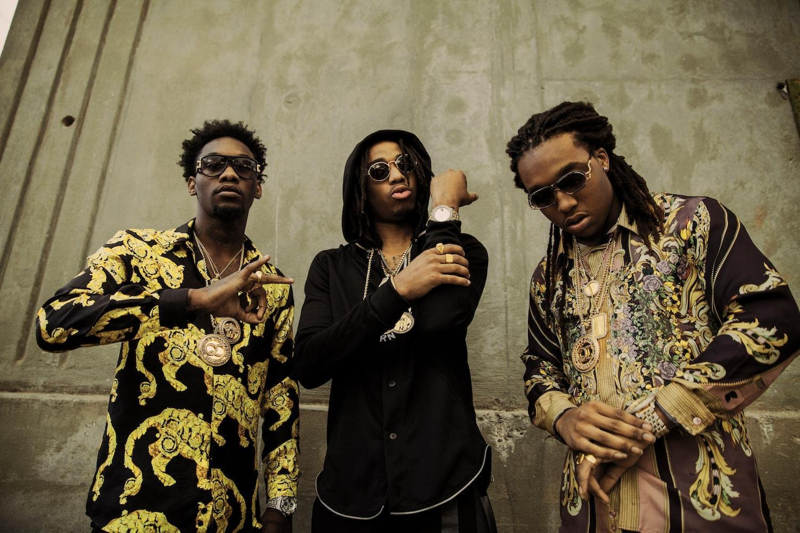
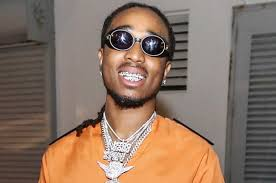
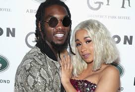
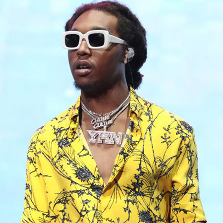

| Contact |
Name |
Email Address |
Phone |
| Info |
Luke Carlyle |
luke.carlyle@maine.edu |
617-510-1652 |
Migos

The Migos are my favorite rap group. They have three very creative rappers that are changing the style of rap. Quavo, Offset, Takeoff are taking over and changing the culture.

Quavo or also known as Huncho, Is the leader of the group. He has some incredible verses and has the best jewlery in the rap game.

Offset used to be my favorite rapper in the group. He could change his flow like no one else. He isn't my favorite any more because he is dating Carti B and she is the worst.

Takeoff is the least popular in the group but I still like him. He doesn't have a ton of great songs out and does not release as much msuic as the other two but Takeoff is still a key part in the group.
Young Thug
Lil Uzi Vert
Kodak Black
Drake
Home Page